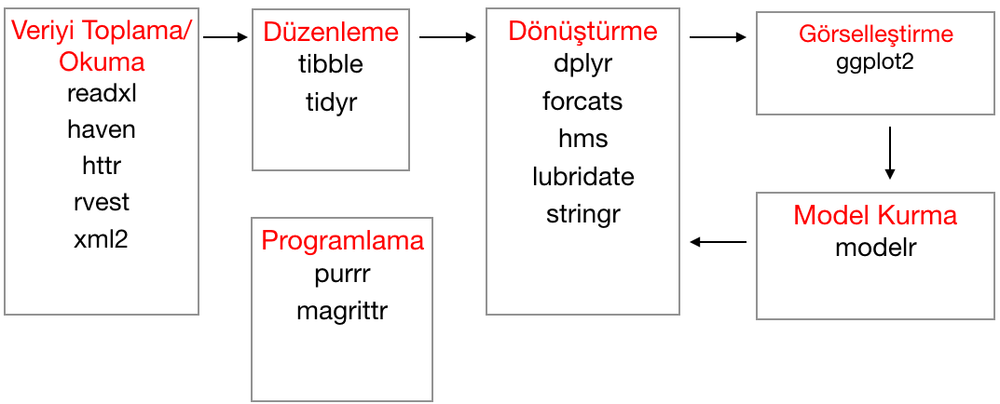
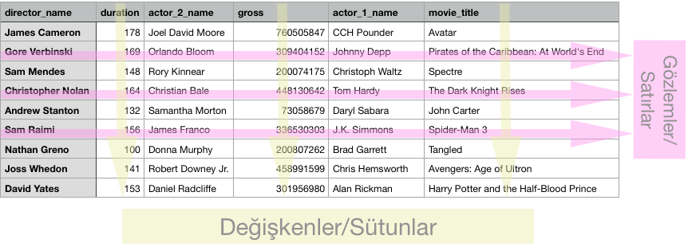

Tidyverse
Veri bilimiyle uğraşan birçok insanın karşısında satırlar ve sütunlardan oluşan tablolar mevcut. Bu tabloları bazen API’lar, bazen Excel, csv, txt dosyaları, bazen de veri tabanları sayesinde elde ediyoruz (tabi sadece bunlarla da sınırlı değil). Bunlar kimi zaman düzenli, ama çoğu zaman düzenleme (temizlik) isteyen tablolar. Tidyverse de burada devreye giriyor: bize düzenlemeleri, görselleştirmeleri, modellemeleri kolay bir şekilde yapabilmemizi sağlayan, R’ın birçok paketini içinde bulunduran büyükçe bir paket. Hepsiyle beraber ve en önemlisi Tidyverse bize bir iş akışı (workflow) sunar. Veri bilimi ile uğraşanların sistematik bir şekilde ilerlemesine, işlemler arasında bağlantıların kolay kurulup anlaşılmasına yardımcı olur. Aşağıdaki şemada, tidyverse’ün sağladığı akışı ve kullanabileceğiniz bazı paketleri görebilirsiniz:

Yukarıda bahsedilen tabloları, R dünyasında data frame veya şu anda yaygın halde kullanılan tibble olarak adlandırıyoruz.
Satırlarda gözlemler, sütunlarda değişkenler olacak şekilde aşağıda düzenli, örnek bir data frame var:

Son yıllarda hem okuduklarımdan hem gittiğim konferanslardan hem de içinde bulunduğum R-Ladies topluluğunda veri bilimi eğitimi veren arkadaşlarımızdan edindiğim bilgiler doğrultusunda, bu işe yeni başlayanlara bu alanı sevdirmek için tidyverse yöntemleriyle yazılarıma devam edeceğim. Nedenlerine sevgili Mine Çetintaka-Rundell useR!2017’deki sunumunda çeşitli örneklerle değinmişti. Aşağıdaki örnekleri kendi çalışma alanınızda da deneyebilirsiniz, mtcars R’ın içinde hazır bir veri seti, arabaların benzin tüketimleriyle ve bazı fiziksel özellikleriyle ilgili. Bu iki örnek de aynı sonucu verecektir.
İlk önceinstall.packages(“tidyverse”) ile paketi yükleyelim ve library(tidyverse) ile de paketi çalışır hale getirelim:
install.packages("tidyverse")library(tidyverse)mtcars veri setine şöyle bir bakalım:
head(mtcars)## mpg cyl disp hp drat wt qsec vs am gear carb
## Mazda RX4 21.0 6 160 110 3.90 2.620 16.46 0 1 4 4
## Mazda RX4 Wag 21.0 6 160 110 3.90 2.875 17.02 0 1 4 4
## Datsun 710 22.8 4 108 93 3.85 2.320 18.61 1 1 4 1
## Hornet 4 Drive 21.4 6 258 110 3.08 3.215 19.44 1 0 3 1
## Hornet Sportabout 18.7 8 360 175 3.15 3.440 17.02 0 0 3 2
## Valiant 18.1 6 225 105 2.76 3.460 20.22 1 0 3 1transmission olsun. Bunu da am değişkenindeki 1 ve 0’lara göre yapalım: 0 olursa “automatic”, 1 olursa “manual” olsun.
mtcars$transmission[mtcars$am == 0] = "automatic"
mtcars$transmission[mtcars$am == 1] = "manual"Burada $ işareti iki şekilde kullanılmış: sizin veri setinizden bir değişken seçmenize (subset yani alt kümeleme gibi düşünebilirsiniz) ve veri setinizde bir değişken oluşturmada. Bunu ayırt etmesi kolay değil.
mutate ve case_when kullanarak:
mtcars <- mtcars %>%
mutate(
transmission =
case_when(
am == 0 ~ "automatic",
am == 1 ~ "manual"
)
)mutate dönüştürmek demek. case_when ise sizi if ve else if yapılarını uzun uzun yazmaktan kurtarır. İkinci yazım şekli adım adım daha okunabilir, kolay yazılabilir ve takip edilebilir.
dplyr’a giriş
dplyr, veri manipülasyonu işlemlerini yapabileceğiniz, birçok temel problemi çözen ve bunları aklıda kalıcı fiillerle yapan bir paket. select, filter, muatate, group_by, arrange, summarise bunlardan birkaçı. Ayrıntılı bilgiye bu sayfadan ulaşabilirsiniz.
filmler <- read.csv(file = "movies.csv" , header = TRUE, sep = ",") read.csv(), read.xlsx(), read.table() gibi fonksiyonlar verinizi çalışma alanınıza almanızı sağlar. <- operatörü, atama operatörüdür. Burada, veri setimizi okuyup, atama operatörü ile filmler isimli bir değişkene atamış olduk.
head() fonksiyonu bize veri setimizin ilk 6 gözlemini, tail() fonksiyonu son 6 gözlemini veriyor. Ancak n argümanını değiştirerek istediğiniz kadar gözlemi getirebilirsiniz:
head(filmler, n = 5)## director_name duration actor_2_name gross actor_1_name
## 1 James Cameron 178 Joel David Moore 760505847 CCH Pounder
## 2 Gore Verbinski 169 Orlando Bloom 309404152 Johnny Depp
## 3 Sam Mendes 148 Rory Kinnear 200074175 Christoph Waltz
## 4 Christopher Nolan 164 Christian Bale 448130642 Tom Hardy
## 5 Andrew Stanton 132 Samantha Morton 73058679 Daryl Sabara
## movie_title actor_3_name language
## 1 Avatar Wes Studi English
## 2 Pirates of the Caribbean: At World's End Jack Davenport English
## 3 Spectre Stephanie Sigman English
## 4 The Dark Knight Rises Joseph Gordon-Levitt English
## 5 John Carter Polly Walker English
## country budget title_year imdb_score genres
## 1 USA 237000000 2009 7.9 Action
## 2 USA 300000000 2007 7.1 Action
## 3 UK 245000000 2015 6.8 Action
## 4 USA 250000000 2012 8.5 Action
## 5 USA 263700000 2012 6.6 Actiontail(filmler, n = 3)## director_name duration actor_2_name gross actor_1_name
## 3704 Neill Dela Llana 80 Edgar Tancangco 70071 Ian Gamazon
## 3705 Edward Burns 95 Caitlin FitzGerald 4584 Kerry Bishé
## 3706 Jon Gunn 90 Brian Herzlinger 85222 John August
## movie_title actor_3_name language country budget
## 3704 Cavite Quynn Ton English Philippines 7000
## 3705 Newlyweds Daniella Pineda English USA 9000
## 3706 My Date with Drew Jon Gunn English USA 1100
## title_year imdb_score genres
## 3704 2005 6.3 Thriller
## 3705 2011 6.4 Comedy
## 3706 2004 6.6 Documentarystr(filmler), summary(filmler) ve dim(filmler) fonksiyonlarını da çalıştırıp veri setinizi daha yakından tanıyabilirsiniz. str structure (yapı), summary özet, dim dimension (boyut) demektir.
Şimdi gelelim dplyr’ın nimetlerine.
Örneğin veri setinizdeki 13 değişkenle iş yapmak yerine, sadece bazı değişkenleri seçmek istiyorsunuz. Kullanacağınız fonksiyon:select()
filmler_ulkeler <- filmler %>% select(country, budget, imdb_score) %>% head(n=3)
filmler_ulkeler## country budget imdb_score
## 1 USA 237000000 7.9
## 2 USA 300000000 7.1
## 3 UK 245000000 6.8filmler_ulkeler <- filmler %>% select(2:6, -4) %>% head(n=3)
filmler_ulkeler## duration actor_2_name actor_1_name
## 1 178 Joel David Moore CCH Pounder
## 2 169 Orlando Bloom Johnny Depp
## 3 148 Rory Kinnear Christoph Waltz
## movie_title
## 1 Avatar
## 2 Pirates of the Caribbean: At World's End
## 3 Spectre Burada yeni bir operatörle karşı karşıyayız: %>% Buna pipe operatörü deniyor, biz de zincir operatörü demeyi tercih ediyoruz. Bu operatör soldakinin çıktısını, sağdakine girdi olarak veriyor. Örneğin yukarıda filmler veri setini alıyor, country, budget, imdb_score değişkenlerini seçiyor. Ve yeni bir değişkene, filmler_ülkeler, değişkenine atama yapıyor.
Pekiyi gözlemlerin içinden bazılarını filtrelemek istiyorsanız, örneğin Christopher Nolan’ın imdb puanı 7’den büyük olan filmlerini görmek istiyorsunuz, bu durumda kullanacağınız fonksiyon:filter():
filmler_puanlar <- filmler %>% filter(imdb_score > 7, director_name == "Christopher Nolan")
filmler_puanlar## director_name duration actor_2_name gross actor_1_name
## 1 Christopher Nolan 164 Christian Bale 448130642 Tom Hardy
## 2 Christopher Nolan 152 Heath Ledger 533316061 Christian Bale
## 3 Christopher Nolan 169 Anne Hathaway 187991439 Matthew McConaughey
## 4 Christopher Nolan 148 Tom Hardy 292568851 Leonardo DiCaprio
## 5 Christopher Nolan 128 Liam Neeson 205343774 Christian Bale
## 6 Christopher Nolan 118 Maura Tierney 67263182 Al Pacino
## 7 Christopher Nolan 130 Hugh Jackman 53082743 Christian Bale
## 8 Christopher Nolan 113 Thomas Lennon 25530884 Callum Rennie
## movie_title actor_3_name language country budget
## 1 The Dark Knight Rises Joseph Gordon-Levitt English USA 250000000
## 2 The Dark Knight Morgan Freeman English USA 185000000
## 3 Interstellar Mackenzie Foy English USA 165000000
## 4 Inception Joseph Gordon-Levitt English USA 160000000
## 5 Batman Begins Morgan Freeman English USA 150000000
## 6 Insomnia Crystal Lowe English USA 46000000
## 7 The Prestige Scarlett Johansson English USA 40000000
## 8 Memento Jorja Fox English USA 9000000
## title_year imdb_score genres
## 1 2012 8.5 Action
## 2 2008 9.0 Action
## 3 2014 8.6 Adventure
## 4 2010 8.8 Action
## 5 2005 8.3 Action
## 6 2002 7.2 Drama
## 7 2006 8.5 Drama
## 8 2000 8.5 Mysteryfilmler_UK <- filmler %>% select(country, title_year, imdb_score) %>%
filter (imdb_score >= 6 & country == "UK")
head(filmler_UK)## country title_year imdb_score
## 1 UK 2015 6.8
## 2 UK 2009 7.5
## 3 UK 2008 6.7
## 4 UK 2012 7.8
## 5 UK 2016 7.8
## 6 UK 2007 7.5arrange()
filmler_butce <- filmler %>% select(movie_title, imdb_score, budget) %>% arrange(budget)
head(filmler_butce)## movie_title imdb_score budget
## 1 Tarnation 7.2 218
## 2 My Date with Drew 6.6 1100
## 3 Primer 7.0 7000
## 4 Cavite 6.3 7000
## 5 Newlyweds 6.4 9000
## 6 Pink Flamingos 6.1 10000filmler_butce <- filmler %>% select(movie_title, imdb_score, budget) %>% arrange(desc(budget))
head(filmler_butce)## movie_title imdb_score budget
## 1 Kites 6.0 600000000
## 2 The Messenger: The Story of Joan of Arc 6.4 390000000
## 3 Pirates of the Caribbean: At World's End 7.1 300000000
## 4 John Carter 6.6 263700000
## 5 Tangled 7.8 260000000
## 6 Spider-Man 3 6.2 258000000Bir sonraki yazıda mutate(), group_by() ve summarise() fonksiyonlarını aynı veri seti üzerinden anlatacağım.